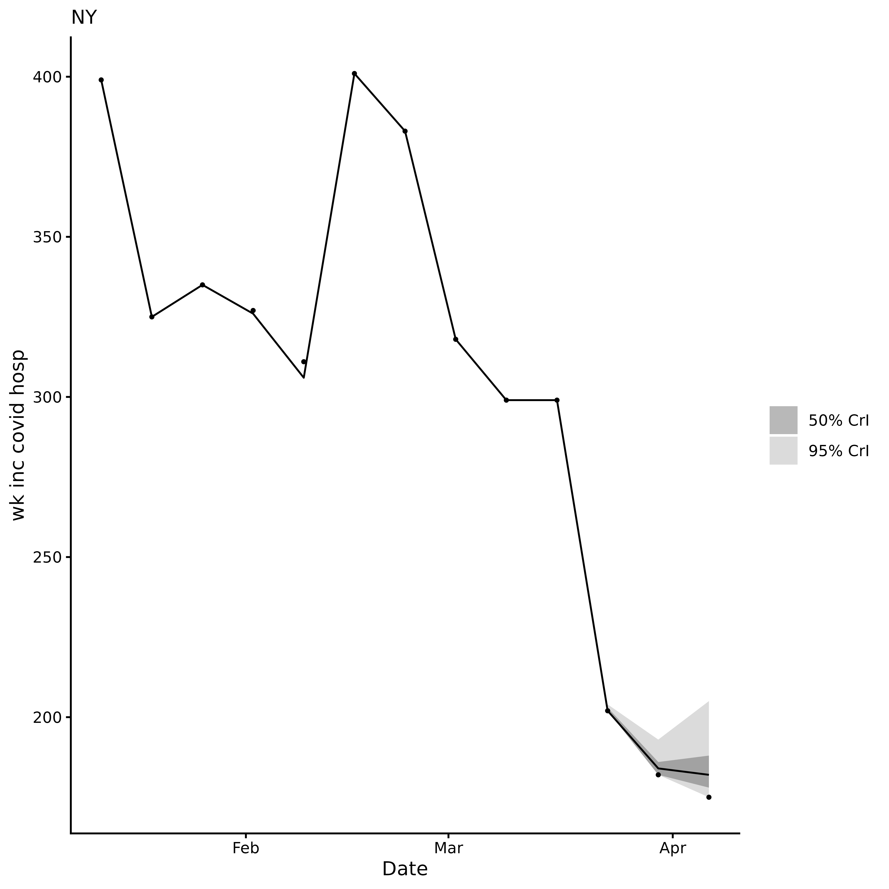
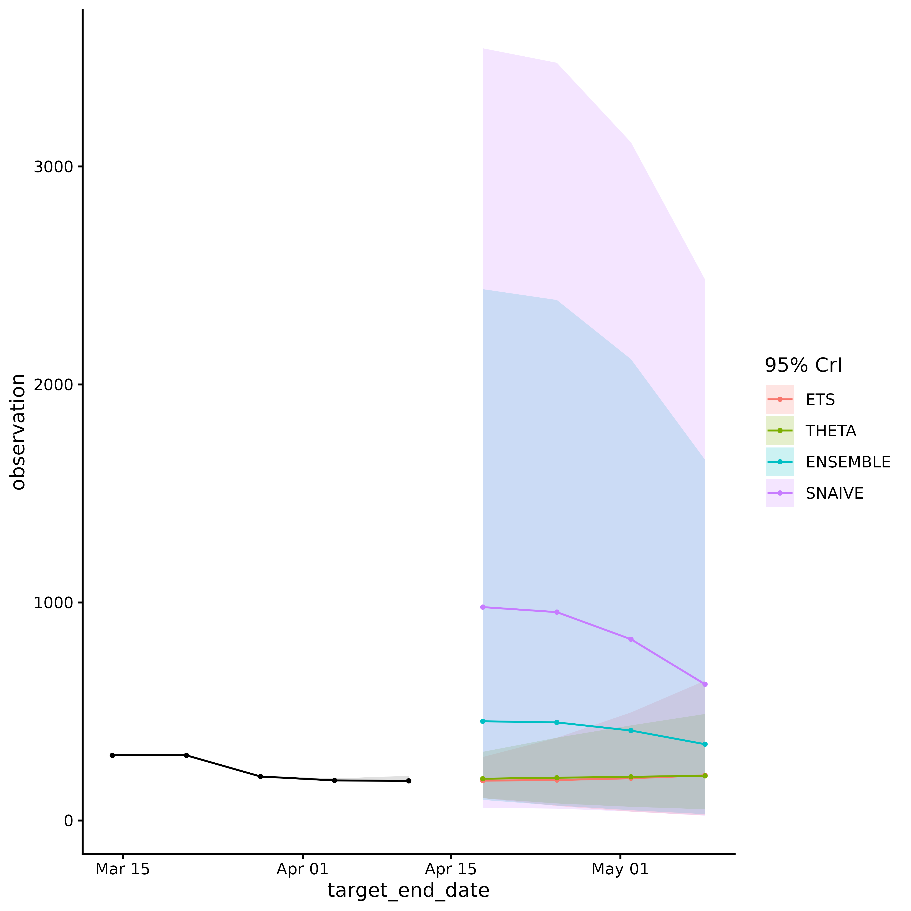

Overview
acciddasuite builds infectious disease forecasts in
three steps:
-
get_data()orcheck_data(): fetch or validate surveillance data. -
get_ncast()(optional): correct recent weeks for reporting delays. -
get_fcast(): evaluate models via cross-validation and forecast into the future.
The package relies on the fable modeling
framework and follows the standard forecasting workflow described by Hyndman &
Athanasopoulos (2021). The overall goal is to provide public health
professionals with an easily-adoptable approach to generating an
ensemble of outputs from statistical models, evaluating forecasts, and
visualizing outputs.
Forecast Planning
To get more information about how to know whether forecasting is the best approach for your task, follow the steps in this article.
Step 1: Get data
We fetch weekly COVID-19 hospital admissions for New York from the CDC
NHSN via epidatr.
Setting revisions = TRUE retrieves the full revision
history (i.e. all past versions of the data), which is needed
for nowcasting.
get_data() returns a validated accidda_data
object:
library(acciddasuite)
df <- get_data(pathogen = "covid", geo_value = "ny", revisions = TRUE)
df
#> <accidda_data>
#>
#> Location: NY
#> Target: wk inc covid hosp
#> Window: 2020-08-08 to 2026-04-11 ( 297 dates )
#> History: TRUE ( 2024-11-17 to 2026-04-12 )You can also bring your own data. Just pass it
through check_data(). See
vignette("external_data") for formatting details.
Step 2: Nowcasting (optional)
The most recent weeks of surveillance data are almost always too low because hospitals are still filing late reports (right truncated). If you feed these raw counts into a forecaster, predictions will be biased downward.
get_ncast() estimates what the recent counts will look
like once all reports arrive. With the default
max_delay = 4, the last 4 weeks are corrected; everything
before that is left untouched.
ncast <- get_ncast(df)
ncast
#> <accidda_ncast>
#>
#> Nowcasted 4 weeks: 2026-03-21 to 2026-04-11
#>
#> $data corrected series (297 rows)
#> $plot nowcast visualisation
ncast$plot
The corrected ncast$data contains two extra columns:
ncast_lower and ncast_upper (95% CrI) for the
corrected weeks. get_fcast() detects these automatically
and uses them to propagate nowcasting uncertainty into the final
forecast.
Step 3: Forecasting
get_fcast() does two things:
-
Model selection: time series cross-validation on
the full (median corrected) series, starting from
eval_start_date. Models are ranked by WIS; the besttop_nform an equal weight ensemble. -
Final forecast: projects
hweeks into the future. When nowcast columns are present, the forecast is produced from three baselines (lower, median, and upper nowcast estimates) and pooled, so prediction intervals reflect both model uncertainty and nowcast uncertainty.
We set eval_start_date to mark the start of the
evaluation window. At least 52 weeks of data must precede this date.
eval_start_date <- max(ncast$data$target_end_date) - 28Default models are:
SNAIVE(Seasonal Naïve): Assumes this week will look like the same week last year. The simplest possible baseline.ETS(Exponential Smoothing): A weighted average where recent weeks matter more than older ones. Adapts to trends and seasonal patterns.THETA: Splits the data into a long-term trend and short-term fluctuations, forecasts each separately, then combines them.ARIMA: Learns repeating patterns from past values to predict future ones. Auto-configured to find the best fit.
We use pipetime::time_pipe() to log how long the model
selection and forecasting steps take.
fcast <- get_fcast(
ncast,
eval_start_date = eval_start_date,
top_n = 4,
h = 4
) |>
pipetime::time_pipe("base fcast", log = "log")
fcast
#> <accidda_fcast>
#>
#> Models evaluated:
#> model_id wis
#> <char> <num>
#> ETS 30.16633
#> THETA 41.34537
#> ENSEMBLE 79.64422
#> SNAIVE 297.35408
#>
#> Forecast horizon:
#> From: 2026-03-14
#> To: 2026-05-09
#>
#> Contents:
#> $hubcast hub forecast object
#> $score model ranking table
#> $plot ggplot2 object
fcast$plot
View forecast evaluation by viewing the score element of
the object:
fcast$score
#> Key: <model_id>
#> model_id wis interval_coverage_50 interval_coverage_95
#> <char> <num> <num> <num>
#> 1: ETS 30.16633 1.0 1
#> 2: THETA 41.34537 0.5 1
#> 3: ENSEMBLE 79.64422 0.5 1
#> 4: SNAIVE 297.35408 0.0 1
#> wis_relative_skill
#> <num>
#> 1: 0.4091929
#> 2: 0.5608316
#> 3: 1.0803386
#> 4: 4.0334765Adding custom models
Any model compatible with the fable framework can
be passed via extra_models:
library(fable)
library(fable.prophet)
extra <- list(
CUSTOM_ARIMA = ARIMA(observation ~ pdq(1,1,0)),
PROPHET = prophet(observation ~ season("year")),
EPIESTIM = EPIESTIM(observation, mean_si = 3, std_si = 2, rt_window = 7)
)
fcast <- get_fcast(
ncast,
eval_start_date = eval_start_date,
top_n = 4,
h = 3,
extra_models = extra
) |>
pipetime::time_pipe("extra fcast", log = "log")You can check how long each step took by calling
pipetime::get_log():
pipetime::get_log()
#> $log
#> timestamp label duration unit
#> 1 2026-04-24 16:51:52 base fcast 18.83492 secs
#> 2 2026-04-24 16:52:15 extra fcast 25.72153 secsSubmit to RespiLens
RespiLens is a platform for
sharing respiratory disease forecasts. Use to_respilens()
to export the forecast as JSON for upload to MyRespiLens.
to_respilens(fcast, "respilens.json")